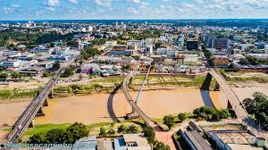

O Acre é um estado localizado na região Norte do Brasil, fazendo fronteira com a Bolívia e o Peru. Sua capital é Rio Branco, e o estado é conhecido por sua rica biodiversidade, com vastas áreas de floresta amazônica, além de ter uma grande importância histórica, principalmente no contexto da formação do Brasil. O Acre foi originalmente disputado por Brasil e Bolívia, com a região sendo um ponto de tensão nas últimas décadas do século XIX. A "Questão Acreana" foi resolvida em 1903, após um tratado entre os dois países, o que resultou na incorporação definitiva do território ao Brasil.
